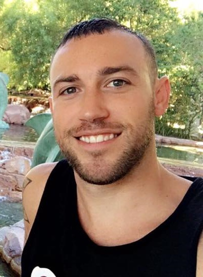

About Me

Hello my Name is Gregory Row and I am an aspiring video game programmer. All my life i've had the pleasure playing video games across multiple consoles and platforms and have been able to watch the industy grow into what it is today. Playing a crucial role in creating video games as we know them today would be a dream come true.
In 2013 I graduated from Salem State Univeristy with a Bachelor of Science degree concentration in Marketing. Marketing wasn't my passion as I finished the program, but grasping the knowledge and understanding of what it takes to run a business was a good set of skills to obtain. Since then I've worked at Coldwell Bankers regional corportate office working in the E-team office. I also worked at a couple restaurants waiting tables and managing guests. Once this bootcamp course is over I plan on completely moving into the coding world with a job that I can be proud of.
Favorite hobbies include singing, working out, going on roller coasters, and of course playing video games. Singing is definitely my number one passion. I've been singing since I was 2. My favorite video games character is Sonic the Hedgehog and he should be yours too!